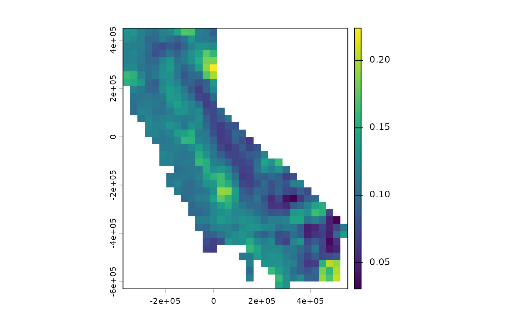
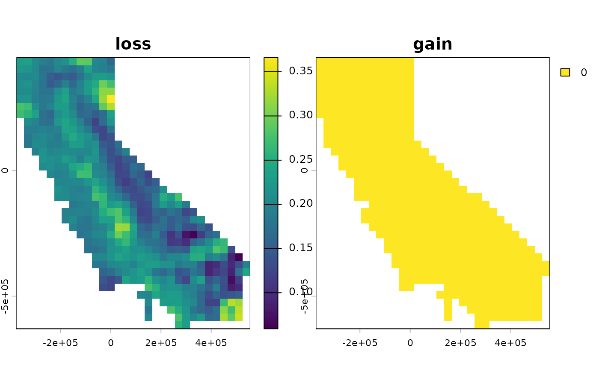

Phylogenetic dissimilarity between paired data sets
Source:R/ps_dissim_paired.R
ps_dissim_paired.RdComputes phylogenetic dissimilarity between two data sets at each site, comparing every site in x to
the same site in y. Typical uses include change over time (e.g. historical versus current distributions,
or current versus projected), and comparisons of two estimates of the same communities (e.g. observed
versus modeled).
Usage
ps_dissim_paired(
x,
y,
method = "sorensen",
tree = NULL,
ranges = c("pooled", "x", "separate"),
spatial = TRUE,
...
)Arguments
- x, y
phylospatialobjects with the same sites.- method
Dissimilarity index: any method accepted by
ps_dissim()except those noted in the description, or"loss"or"gain".- tree
Optional phylogeny of class
phylo, used to align the trees ofxandywhen they differ. See the description.- ranges
Range sizes used for endemism weighting:
"pooled"(the default),"x", or"separate". Ignored unlessendemism = TRUE. See the description.- spatial
Logical: if
TRUE(the default) andxoryhas spatial data, return aSpatRasterorsfobject; otherwise return a matrix.- ...
Further arguments:
fun,endemism,normalize, andtips_only, as inps_dissim(), and arguments passed tofun.
Value
A SpatRaster with one layer or an sf object with one variable, or a one-column matrix with a
row per site, giving dissimilarity at each site (NA for sites empty in both data sets).
Details
Sites. x and y must have the same sites: the same number, and the same spatial data if both have
it. Results cover every site occupied in either data set. A site occupied in only one data set has a
Sorensen dissimilarity of 1; indices that are undefined when one community is empty, such as
"sorensen_turnover", or "loss" at a site empty in x, are NA there. Sites empty in both are NA.
Trees. By default, x and y must have identical trees. Because phylospatial() drops taxa with no
occurrences, two data sets built from the same phylogeny will often have different trees, for example
when a taxon occurs in only one time period. In that case, supply the original phylogeny as tree: the
same tree used to build both data sets, including any transformation such as delta_tree(). It is pruned
to the taxa found in either data set and rescaled with the data sets' rescale method, and clade ranges
for both data sets are rebuilt on it from their terminal taxa. This gives the same result as if
phylospatial() had kept the absent taxa. It requires that x and y were built from terminal taxa,
rather than from supplied clade ranges (build = FALSE).
Methods. All methods available in ps_dissim() are supported, except the vegdist methods "gower",
"mahalanobis", "chisq", and "raup", whose value for two communities depends on all the other sites
in the data set. In addition, two asymmetric indices describe the direction of change. Writing \(a\) for
the branch length shared by a site's two communities, \(b\) for the branch length found only in x, and
\(c\) for the branch length found only in y:
"loss": \(b / (a + b)\), the fraction of the branch length inxthat is absent fromy."gain": \(c / (a + c)\), the fraction of the branch length inythat is absent fromx.
As with the other quantitative indices, for probability or abundance data these include declines and
increases in lineages present in both data sets, not only local losses and gains of lineages. With
fun = "designdist", x is the first data set, so in asymmetric formulas A (or a + b) refers to x.
Endemism. With endemism = TRUE, community values are divided by lineage range sizes before
comparison. The ranges argument chooses which range sizes:
"pooled"(the default): each lineage's combined range across both data sets. Both data sets are weighted on a common scale, and symmetric indices remain symmetric inxandy."x": ranges inx, treating it as a baseline. Lineages absent fromxare weighted by their range iny. Symmetric indices are no longer symmetric inxandy."separate": each data set's own ranges, as inps_dissim(). This conflates change in composition with change in range size: a lineage whose range contracts is weighted more heavily iny.
With "pooled" and "x", x and y must have the same site weights (see the site_weight argument of
phylospatial()).
Examples
# a hypothetical second time period, in which some taxa are lost
# and others decline in occurrence probability
ps1 <- moss()
comm2 <- ps_get_comm(ps1)
set.seed(1)
i <- sample(terra::nlyr(comm2), 150)
comm2[[i[1:50]]] <- comm2[[i[1:50]]] * 0
comm2[[i[51:150]]] <- comm2[[i[51:150]]] * 0.5
# lost taxa are dropped from the second data set and its tree, with a warning
ps2 <- phylospatial(comm2, ps1$tree)
#> Warning: Dropping 50 tips from tree that are missing from community matrix or have no occurrences.
#> Warning: Dropping 50 taxa from community matrix that have no occurrences or are missing in tree.
#> Community data type detected: probability
# so the original tree is supplied to align the two data sets
d <- ps_dissim_paired(ps1, ps2, tree = ps1$tree)
terra::plot(d)

# the direction of change
terra::plot(c(ps_dissim_paired(ps1, ps2, "loss", tree = ps1$tree),
ps_dissim_paired(ps1, ps2, "gain", tree = ps1$tree)))
